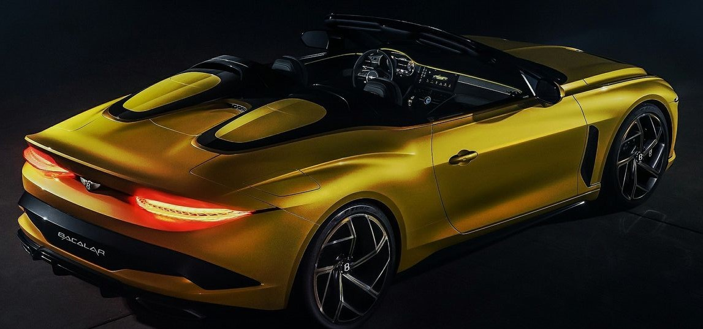
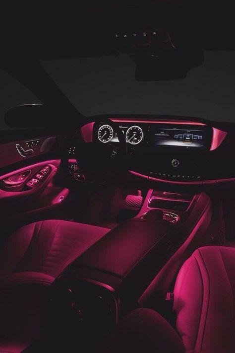
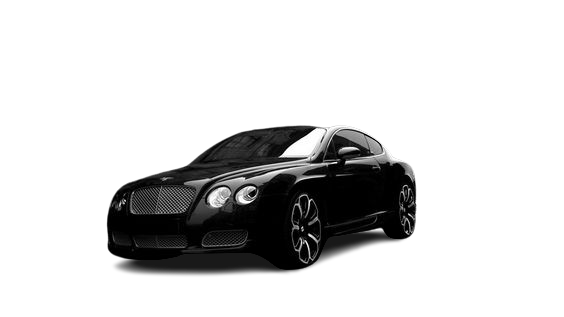

-
Nuestros coches
Mclaren Bugatti Maserati Bentley
- Seguros
- Sobre nosotros
- Contacto

Bacalar
1.725.000€Consumo Aceleración Potencia Velocidad máxima 11'7 l/100km De 0 a 100km/h en 3'5s 659 CV 322 km/h
Información adicional:Ponte en la piel de un multimillonario exigente, que considera que un Bentley Continental GT Convertible no es lo suficientemente exclusivo para él. No hay problema: la marca británica acaba de presentar el Bentley Bacalar 2020, un speedster de ensueño para los más sibaritas, del que solo se fabricarán a mano 12 unidades, todas vendidas, cada una de ellas al módico precio de 1,5 millones de libras (1,72 millones de euros).
Continental1.750.000€
 Consumo Aceleración Potencia Velocidad máxima 17,1 L/100 km De 0 a 100km/h en 4,5 s 600 CV 326 km/h
Información adicional:El Bentley Continental GT es un automóvil deportivo de gran turismo del fabricante inglés Bentley.
Es un 2+2 plazas con motor delantero longitudinal y tracción a las cuatro ruedas. Se ofrece con carrocerías coupé y descapotable de dos puertas ("Continental GTC"), puestos a la venta en mediados de 2003 y fines de 2006 respectivamente.
Algunos de sus rivales son el Aston Martin DB9, el Ferrari 612 Scaglietti, el Mercedes-Benz Clase CL, el Jaguar XK y el Rolls-Royce Wraith.

Mulssane300.000€

Consumo Aceleración Potencia Velocidad máxima 15,9 l/100km De 0 a 100km/h en 2,8s 512 - 537 CV 296 km/h
Información adicional:El Bentley Mulsanne es un automóvil del segmento F producido por Bentley Motors Limited desde 1980-1992 y desde 2010 en adelante. En 2010 vuelve el modelo Mulsanne al mercado que fue diseñado para reemplazar al Arnage, siendo presentado en el concurso Pebble Beach, el 16 de agosto de 2009. Mulsanne monta un V8 de 6,75 L (6750 cc), que produce una potencia de 530 cv, y 549 en el Mulsanne Speed, el cual tiene más de mil newtons metro de par máximo, siendo el vehículo de calle con más par del mundo.